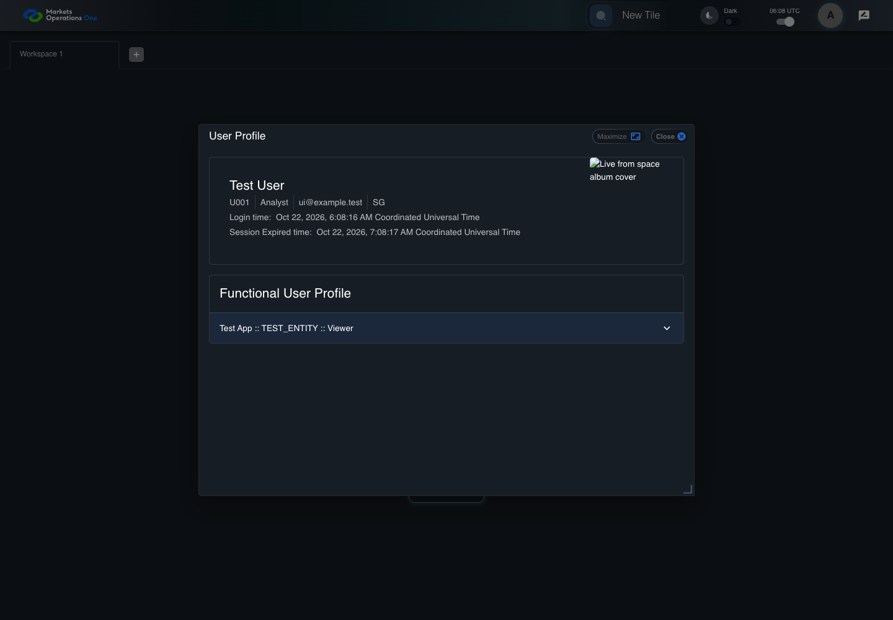

UI-PREF-006 show profile identity fields
PASS · application/run-050/ui-pref-006-show-profile-identity-fields-112b410f72dd-attempt-1 · ACTUAL_APPLICATION_LOCAL_SERVICES
Actual current React shell. Controlled login, validation, and activity renewal responses supply UI-USER-01, catalog, and entities. A controlled SystemJS React container displays routes and parameters. Local fixture SVGs replace catalog images. Identity, entitlements, and business tenant behavior are not established.
2026-10-22T06:08:15.855Z to 2026-10-22T06:08:22.584Z
Assertions and result · Artifact manifest · Exact run inputs and source hashes
Result SHA-256:0d0a9933b55b8b810287ccc592025022e7d92e4f2d445454e5585737726cfdebScreenshot capture: CAPTURED. Named frames: 10.
Step screenshot bindings: COMPLETE. 9/9 canonical steps have execution screenshots.
Bindings measure structural coverage only. They do not establish screenshot content quality or relevance.
Screenshot content review: NOT_REVIEWED. Recorded context: 0/10 frames. Identical image bytes: 7 repeated frames. Recorded context does not establish human visual review.
Canonical step timeline
Given User A is authenticated as fixture UI-USER-01 with the case-specific permissions
Execution: PASSED.
1. step-01 Visible state after step 1: Given User A is authenticated as fixture UI-USER-01 with the case-specific permissions
2026-10-22T06:08:18.148Z · 1440×1000
Step: /Users/lushevol/code/github/ratan-release-impact/workbench/tasks/ui-test-coverage-20261022/test-cases.md:7526
SHA-256:fcdb7e886745751817c5a9e551fd47a62899d6497092ca8f80a5c9e3d9e7d6d1And UI-USER-01 has fullName Test User, OUD userId U001, title Analyst, emailId ui@example.test, and country SG
Execution: PASSED.
2. step-02 Visible state after step 2: And UI-USER-01 has fullName Test User, OUD userId U001, title Analyst, emailId ui@example.test, and country SG
2026-10-22T06:08:18.280Z · 1440×1000
Step: /Users/lushevol/code/github/ratan-release-impact/workbench/tasks/ui-test-coverage-20261022/test-cases.md:7527
SHA-256:fcdb7e886745751817c5a9e551fd47a62899d6497092ca8f80a5c9e3d9e7d6d1Image bytes match frame 1. An unchanged image can be valid for consecutive assertions. This match does not establish correct step content.
When User A clicks icon button named "User Profiles" inside the shell application bar
Execution: PASSED.3. step-03 Visible state after step 3: When User A clicks icon button named "User Profiles" inside the shell application bar
2026-10-22T06:08:18.591Z · 1440×1000
Step: /Users/lushevol/code/github/ratan-release-impact/workbench/tasks/ui-test-coverage-20261022/test-cases.md:7528
SHA-256:564d3eac2ad3804ec324efad3b8836c70ad2b6094b3c61202acadc0577a2eb9fAnd User A clicks menu item with text "Click to view user profile details" inside the user menu with ID "menu-appbar-avatar"
Execution: PASSED.
4. step-04 Visible state after step 4: And User A clicks menu item with text "Click to view user profile details" inside the user menu with ID "menu-appbar-avatar"
2026-10-22T06:08:20.371Z · 1440×1000
Step: /Users/lushevol/code/github/ratan-release-impact/workbench/tasks/ui-test-coverage-20261022/test-cases.md:7529
SHA-256:4085a0590f16a91e1b1884631a5b2e9ce67931fe3b50ebb036cb66c49ee29a89Then text with text "Test User" inside the region with test ID "entitlement-profile-label-box" in the dialog named "User Profile" is visible
Execution: PASSED.
5. step-05 Visible state after step 5: Then text with text "Test User" inside the region with test ID "entitlement-profile-label-box" in the dialog named "User Profile" is visible
2026-10-22T06:08:20.597Z · 1440×1000
Step: /Users/lushevol/code/github/ratan-release-impact/workbench/tasks/ui-test-coverage-20261022/test-cases.md:7530
SHA-256:4085a0590f16a91e1b1884631a5b2e9ce67931fe3b50ebb036cb66c49ee29a89Image bytes match frame 4. An unchanged image can be valid for consecutive assertions. This match does not establish correct step content.
And text with text "U001" inside the region with test ID "entitlement-profile-label-box" in the dialog named "User Profile" is visible
Execution: PASSED.
6. step-06 Visible state after step 6: And text with text "U001" inside the region with test ID "entitlement-profile-label-box" in the dialog named "User Profile" is visible
2026-10-22T06:08:20.861Z · 1440×1000
Step: /Users/lushevol/code/github/ratan-release-impact/workbench/tasks/ui-test-coverage-20261022/test-cases.md:7531
SHA-256:4085a0590f16a91e1b1884631a5b2e9ce67931fe3b50ebb036cb66c49ee29a89Image bytes match frame 5. An unchanged image can be valid for consecutive assertions. This match does not establish correct step content.
And text with text "Analyst" inside the region with test ID "entitlement-profile-label-box" in the dialog named "User Profile" is visible
Execution: PASSED.
7. step-07 Visible state after step 7: And text with text "Analyst" inside the region with test ID "entitlement-profile-label-box" in the dialog named "User Profile" is visible
2026-10-22T06:08:21.115Z · 1440×1000
Step: /Users/lushevol/code/github/ratan-release-impact/workbench/tasks/ui-test-coverage-20261022/test-cases.md:7532
SHA-256:4085a0590f16a91e1b1884631a5b2e9ce67931fe3b50ebb036cb66c49ee29a89Image bytes match frame 6. An unchanged image can be valid for consecutive assertions. This match does not establish correct step content.
And text with text "ui@example.test" inside the region with test ID "entitlement-profile-label-box" in the dialog named "User Profile" is visible
Execution: PASSED.
8. step-08 Visible state after step 8: And text with text "ui@example.test" inside the region with test ID "entitlement-profile-label-box" in the dialog named "User Profile" is visible
2026-10-22T06:08:21.213Z · 1440×1000
Step: /Users/lushevol/code/github/ratan-release-impact/workbench/tasks/ui-test-coverage-20261022/test-cases.md:7533
SHA-256:4085a0590f16a91e1b1884631a5b2e9ce67931fe3b50ebb036cb66c49ee29a89Image bytes match frame 7. An unchanged image can be valid for consecutive assertions. This match does not establish correct step content.
And text with text "SG" inside the region with test ID "entitlement-profile-label-box" in the dialog named "User Profile" is visible
Execution: PASSED.
9. step-09 Visible state after step 9: And text with text "SG" inside the region with test ID "entitlement-profile-label-box" in the dialog named "User Profile" is visible
2026-10-22T06:08:21.308Z · 1440×1000
Step: /Users/lushevol/code/github/ratan-release-impact/workbench/tasks/ui-test-coverage-20261022/test-cases.md:7534
SHA-256:4085a0590f16a91e1b1884631a5b2e9ce67931fe3b50ebb036cb66c49ee29a89Image bytes match frame 8. An unchanged image can be valid for consecutive assertions. This match does not establish correct step content.
Additional named frames

The final visible state after the named test assertions.
2026-10-22T06:08:21.510Z · 1440×1000Step: Test source: /Users/lushevol/code/github/ratan-release-impact/workbench/e2e/audit-specs/catalog-profile-expanded.spec.ts:252
SHA-256:
4085a0590f16a91e1b1884631a5b2e9ce67931fe3b50ebb036cb66c49ee29a89Image bytes match frame 9. An unchanged image can be valid for consecutive assertions. This match does not establish correct step content.
Screenshots establish visible state only. Assertions and traces support functional claims.